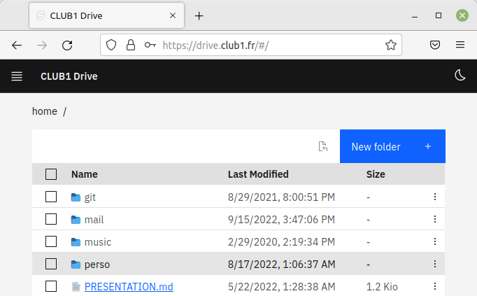

Drive Web file explorer#
The CLUB1 Drive is a file explorer that can be used through a Web browser. It allows to access your personal space without the need for configuring or install any native application. It is therefore very useful when you are not on your personal computer.

The address of the Web client is https://drive.club1.fr.
Note
Les fichiers cachés n’apparraissent pas dans cette interface. Pour y avoir accès, il vaut mieux se tourner vers le service FTP, WebDAV ou SSH.
Homemade is best !#
This is an application developed by and for CLUB1 whose source code can be found on GitHub. However, it has been thought of in a generic way, so that it can be used outside the CLUB1 infrastructure. It uses a standard WebDAV server as its data source, to which CLUB1 provides an access.